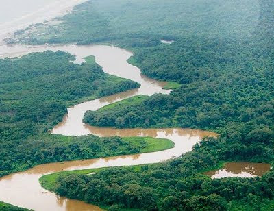

Plantas de Honduras
Animales de Honduras
Parque nacional la tigra
Pagina Principal
Biosfera del rio platano
La Reserva de la Biosfera de Rio Platano esta
localizada en los alrededores de rio Platano
en La Mosquitia, la region en la costa
caribeña de Honduras. Tiene una extensión de
9,871 km² y abarca tanto montañas como tierras
bajas de selva tropical con una gran
biobiodiversida, la reserva ha sido declarada
Patrimonio de la Humanidad y Reserva de la
Biosfera por la Unesco, en el año 1981.Y si se
incluye con la Reserva de la Biosfera Bosawás
en Nicaragua que geograficamente son una sola
selva, se posicionaria como la segunda selva
mas grande del hemisferio occidental con más
de 33,740 km, despues de la selva amazonica en
Brasil. Incluso ha participado como una de las
siete Maravillas naturales del planeta, ademas
de representar el 7% de la superficie de
Honduras, las recientes investigaciones
confirmaron que hay 3 veces más animales por
hectarea cuadrada mas que en la amazonia,
convirtiendose en la selva mas densamente
poblada del continente.
